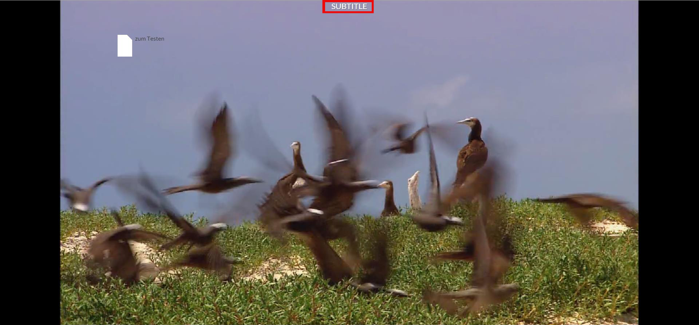
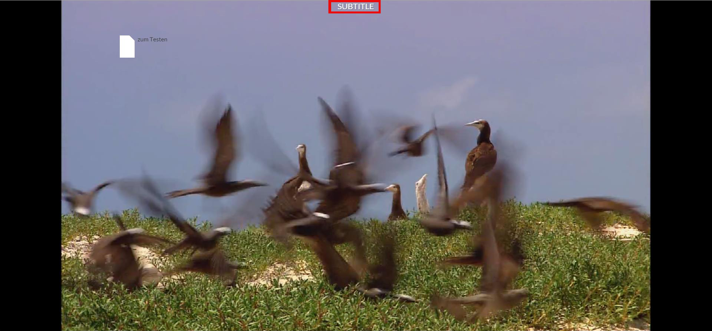

Im fertigen Projekt sieht dies wie folgt aus:

Für weitere Details siehe "Erstellen von Annotationen"
Bei einer Untertitel-Annotation können Start- und Endzeitpunkt der Wiedergabe festgelegt werden. Außerdem kann die Annotation mit
einem Namen versehen werden.
Im fertigen Projekt sieht dies wie folgt aus:

Für weitere Details siehe
"Erstellen von Annotationen"